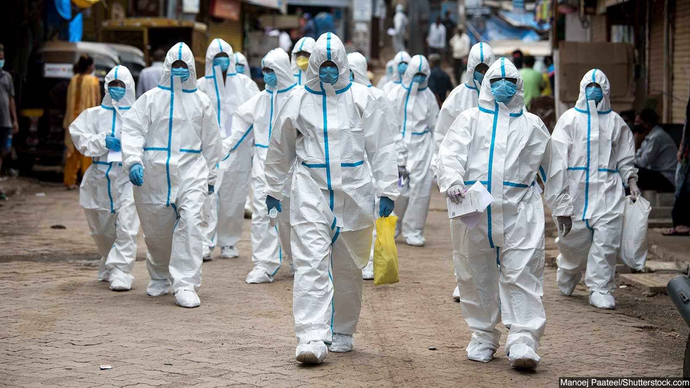
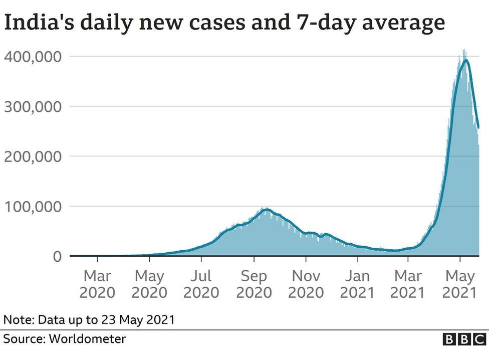

Devastation By The Delta Variant

India had a shockingly large second wave of coronavirus disease 2019 (COVID-19) in 2021. In addition to the spread of the virus into the hinterlands, largely unserved by large hospitals with intensive care facilities, the severe acute respiratory syndrome coronavirus 2 (SARS-CoV-2) appears to have acquired new characteristics that contributed largely to its rapid and devastating spread across the country.
Story of the second wave
Soon after the first detection of the virus in India, within just two weeks of the official declaration of COVID-19 as a pandemic by the World Health Organization (WHO), a national lockdown was declared that lasted for over two months. At that point, there were just over 500 cases in the whole country, with a population of over 1.3 billion. After June 1, 2020, a phased relaxation of the lockdown was implemented, though with wide local variations from state to state. However, case counts continued to rise till the peak on September 16, but the doubling time declined dramatically, as did the case fatality rate. Once the peak was passed, case incidence went down to below 10,000 new cases a day by February 2021. However, many seroprevalence studies indicate this to be a massive under-ascertainment on the order of 6% of total cases. Around this time, political rallies, electioneering crowds, religious festivals, and some social events were held, reflecting the gung-ho mood among the top officials who claimed that the pandemic was in its “end-game.” While both the Oxford-AstraZeneca and the indigenous Covaxin vaccines were being put through their clinical trials, operational guidelines were being discussed to implement vaccination on a national basis. With the healthcare workers being the first group to receive the vaccine, the campaign was flagged off on January 16. Still, the pace was slow, covering less than 1% of the country over the next month (note: this means approximately 8.7 million doses), and by April 1, 2021, over 5% of the population, with one dose. In February 2021, however, Maharashtra, Chattisgarh and Punjab noted a sharp increase in cases, and the reproduction number for the whole country went above 1, indicating a burgeoning pandemic on the fourteenth of the same month. No national-level lockdown was mandated until April 14. By this time, India had undergone a trial by fire, with acute oxygen shortages, no hospital beds, and deaths exceeding the capacity of the system to decently dispose of the corpses. Though the official toll is horrifying enough, many sources suggest that it is a gross undercount, and the actual numbers may never be known.
Deadly delta variant
About the beginning of the second wave, many VOCs were found to have been introduced into the country. The delta variant became the dominant strain, making up over 99% of all sequenced genomes by the end of April 2021. It is associated with resistance to antibody-mediated neutralization, similar to the beta variant B.1.351. The delta variant is also likely to be more transmissible than the alpha variant B.1.1.7. In Maharashtra, where the caseload has been the highest and where an abundance of data is available, this VOC rose from forming 1.5% of the total to 87% over February to May 2021. Using a two-strain model, the researchers combined mortality data with genomic distribution data downloaded from the Global Initiative for Sharing All Influenza Data (GISAID) database. Despite the vast scale of uncertainty about the infection fatality ratio (IFR), the model suggests that if only 50% of deaths are assumed to have been missed, according to them a very conservative assumption, and if the IFR is assumed to be 0.25%, the number of deaths due to the delta variant increased from 15% to 83% from April 1 to May 15, 2021. Overall, during this period, 55% of deaths were caused by this VOC. The scientists concluded that the delta strain is much more transmissible than any other previous lineage. Therefore, this supports the idea that the size of the second wave is not only because of waning immunity or relaxation of non-pharmaceutical interventions (NPIs) but the change in virus transmissibility and susceptibility to neutralizing antibodies.
Higher case and death numbers in second wave
The ratio of standardized daily case rates in every state and union territory in India shows a value above 1, and a median value of 3.8, indicating that wave 2 hit the country much harder than wave 1. The highest ratios were in Uttarakhand and Himachal Pradesh, followed by Punjab and Gujarat. When it comes to the ratio of standardized death rates, the same trend prevails, with only two states reporting a ratio below 1, while the death rates were significantly higher in the second wave for all other regions – the median ratio being 3.2. However, the worst-hit states have a ratio of 6.6 to 8.4. The peak distribution of cases also varied in the first wave from that seen in the second wave. In the former, the earliest peak was towards the end of July 2020, for the southern state of Tamil Nadu, while Himachal Pradesh recorded the latest, on November 29. For wave 2, the Himalayan territory of Ladakh recorded its peak on April 17, 2021, while Mizoram peaked on May 30. The majority of states had many more cases and deaths in the second wave, while peak deaths in wave 2 were four times that of the first wave.